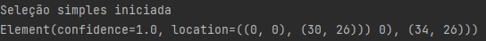
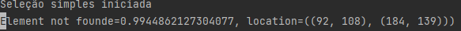
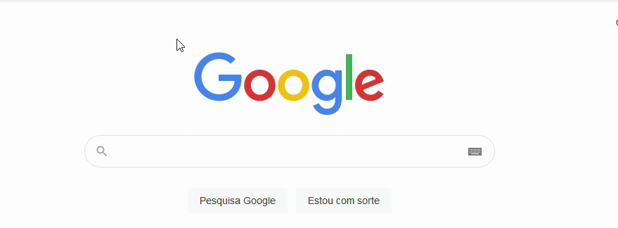
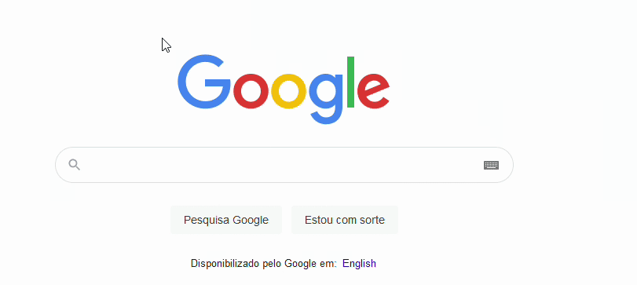

Prod Studio
Não tem como usar o Automation Studio sem aprender o basico do Prod Studio.
Com a nova versão do Prod Studio você não precisa mais criar a pasta para as imagens e o arquivo .toml.
Na chamada do CLI do Prod Studio você passa o nome dos arquivos.
Exemplo:
python -m prod_studio config.toml img
Se não arquivos "config.toml" e "img" não existirem, o prod_studio vai criar automaticamente.
Como Usar
O Automation Studio faz a instalação do prod studio por dependencia, mas caso deseja pode fazer a instalação pelo pip.
pip install git+https://github.com/digital-path/prod_studio@default#egg=prod_studio
Mapeando o elemento
O mapeamento do elemento é bem parecido com a DOM do html.
Você vai selecionar uma àrea e o prod_studio vai te mostrar a precisão que ele terá de encontrar aquele elemento na tela.
Por default o prod_studio só retornar elementos com a precisão acima de 0.9, para não ocorrer falso-positivo.
É sempre aconselhado tentar mapear elementos 1.0, mas qualquer coisa acima de 0.9 já é bom.
Elemento encontrado: 
Elemento não encontrado 
python -m prod_studio config.toml img
Mapeamento Simples.

Exemplo: Mapear o logo da Google.
Coloque o mouse na parte superior esquerdo do elemento que deseja mapear aperte F1 e levemente arraste para a parte inferior direita e verifica no terminal a precisão de encontrar o elemento. Sempre entre 1.0 e 0.9. Quando atingir uma boa precisão aperte F1 novamente para finalizar o mapeamento.
No terminal dê nome ao elemento e aperte ENTER.
A imagem será salva dentro da pasta passada na chamada do CLI do Prod Studio.
O caminho relativo da imagem será escrito dentro do arquivo .toml passado na chamada do CLI do Prod Studio.
O terminal vai mostrar as chances do robô encontrar aquele elemento na tela.
Quanto mais perto de 1.0 melhor e o robô só encontrará elementos com precisão acima de 0.9
Quando Usar:
Sempre que houver um elemento simples de encontrar. Uma imagem, um botão algo que seja simples de distinguir de outros.
Verifica se não há nenhuma outra imagem/botão identico ao que deseja mapear. O prod_studio leva em consideração o tamanho do elemento, a cor do elemento e etc...
Mapeamento Multipla

Exemplo: Mapear só um "O" do logo da Google.
A seleção multipla é bem parecida com a seleção simples. Coloque o mouse na parte superior esquerda do elemento pai aperte F2 e levemente arraste o mouse para a parte inferior direita e verifica no terminal a precisão de encontrar o elemento. Sempre entre 1.0 e 0.9. Aperte F2. Agora vai ao elemento filho que deseja mapear e faça o mesmo procedimento.
No terminal dê nome ao elemento e aperte ENTER.
A imagem será salva dentro da pasta passada na chamada do CLI do Prod Studio.
O caminho relativo da imagem será escrito dentro do arquivo .toml passado na chamada do CLI do Prod Studio.
Dentro do .toml será salvo um tip, esse tip é a dica de onde o bot vai procurar o elemento.
Primeiro faz o mapeamento do elemento pai.
Depois faz o mapeamento do elemento filho dentro do pai.
Quanto mais perto de 1.0 melhor e o robô só encontrará elementos com precisão acima de 0.9
Quando Usar:
Quando há muitos elementos parecidos, quando você tem certeza que algo vai aparecer naquele exato local da tela.
Preste bastante atenção pois ele vai buscar esse elemento exatamente no mesmo local da tela, então se o elemento se mexer ou alguma coisa mudar ele não vai mais encontrar.
Exemplo:
Há varias checkbox e você deseja marcar somente algumas. A seleção multipla é muito bom para essa ocasião.
Mapeamento OCR
A seleção OCR encontra um texto na tela. Coloque o mouse na parte superior esquerdo do elemento que deseja mapear aperte F3 e levemente arraste para a parte inferior direita e aperte F3 novamente para finalizar o mapeamento.
O modo de seleção é muito parecido com a seleção simples, mas não mostrará a precisão do bot achar o elemento e sim o texto na tela encontrando.
O texto será salvo dentro do .toml com o tip. Você pode apagar o expected_text para encontrar qualquer texto dentro daquele tip.
Mapeamento por video
Bem parecido com a seleção simples. Ele grava a tela e salva como video. Coloque o mouse na parte superior esquerdo do elemento que deseja mapear aperte F4 e levemente arraste para a parte inferior direita e aperte F4 novamente começar a gravar. Um contador vai mostrar o tempo de gravação. Aperte F4 para finalizar a gravação.
O Video será salva dentro da pasta passada na chamada do CLI do Prod Studio.
O caminho relativo do video será escrito dentro do arquivo .toml passado na chamada do CLI do Prod Studio.
Resetar mapeamento
Se não atingir a precisão minima pode ser feita o reset da seleção aperte F9 para que volte ao estagio inicial. Poderá selecionar novamente o elemento que deseja mapear.
Cancelar mapeamento
A qualquer momento aperte "ESC" para cancelar o mepeamento e destravar o terminal.